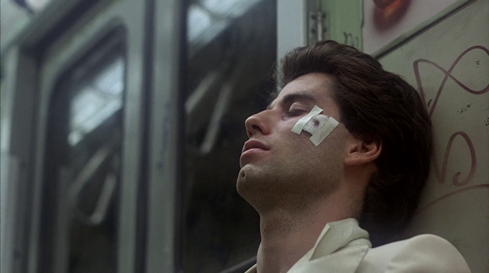
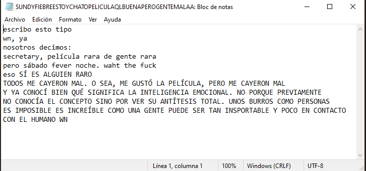
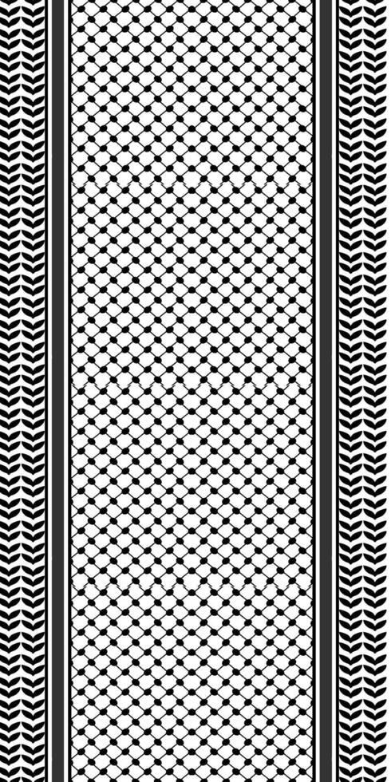
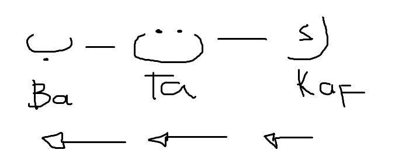
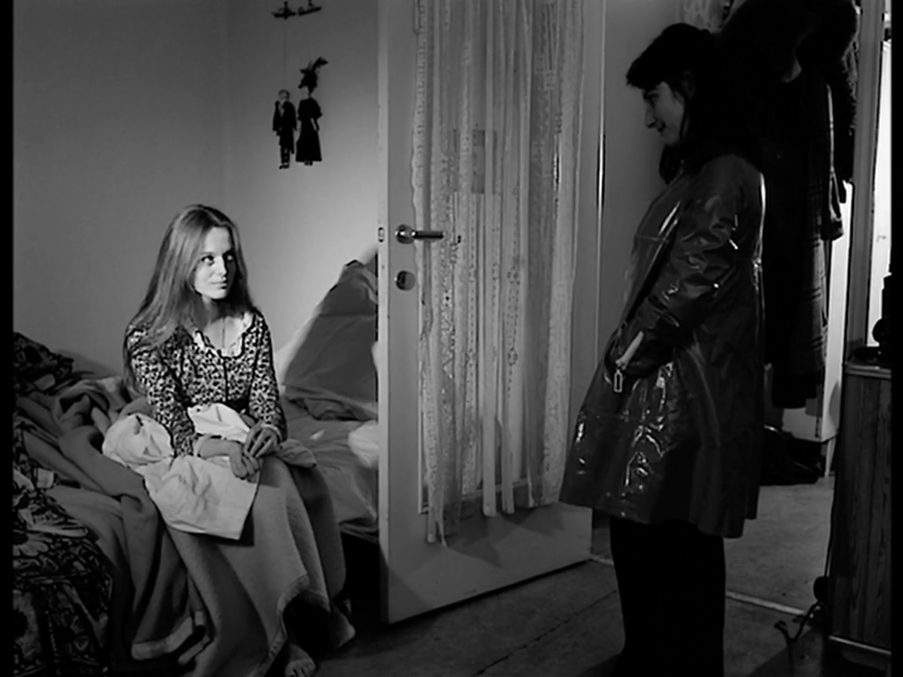

No se logró explicar bien el juego de palabras ese día,
ma adesso:
(pero ahora:)
Bivi es el plural de bivio, que significa bifurcación, lugar donde un camino se separa.
Pero también es muy similar a bevi, que significa beber.
Es tomar las decisiones importantes de tu vida con la valentía (y la paz) de saber que no te achicarás, tomar una decisión con una voluntad que hará temblar tus valores - tu coraje, qué tanto arriesgarías tu estabilidad, cotidianidad, tu fuerza. La vida te dará a escoger entre un vaso de agua y un negroni que te cura con dos sorbos.
Es un juego de palabras similar al que como cuando Eminem (XD) va y dice:
Look, if you had one shot or one opportunity
To seize everything you ever wanted in one moment
Would you capture it or just let it slip?
One shot, one opportunity. Un sí, un no.
Permítame contarle que en mi vida recuerdo muchas de las veces que he dicho no, y me ha pesado más la desgracia que se siente reconocer que hubo una memoria que no alcancé a vivir, a crear. Y mientras que el tiempo por nadie se detiene y sigue su ritmo, distanciando ese no, la justificación que haya tenido en ese momento para rechazar una oportunidad de algo se vuelve cada vez más insignificante, y las cosas que rechazas o desechas te persiguen en susurros de arrepentimiento cuando no lo esperas.
No recuerdo dónde habré leído esta historia, ni exactamente de qué iba, pero era sobre un árbol que se sentía fuerte, ausente de emoción alguna... Mira, justo era estóico. Un árbol plantado en medio de la nada se sentía así, hasta que un día un pájaro distante se sentó en sus ramas y conversó con él. El árbol no tenía emoción alguna, pues no había tenido nada por lo que sentir y por lo que temer. El árbol jamás había llorado, pues nunca tuvo nada que perder.
Porque él era un árbol robusto, de miles de años, y ser longevo era lo único que sabía. Con esto, el pájaro emprendió vuelo a buscar chiquillos que quieran jugar en la sombra del gran árbol. Y por un largo día de sus largos milenios, el árbol conoció los niños, jugar a la pelota, y la sonrisa. Una experiencia le bastó al gran árbol, para desprender sus primeras lágrimas, y pensar en lo poco que ha vivido, pero agradecido por la memoria que unos niños le han hecho vivir, que ahora digno del descanso, digno de alejarse del solitario mundo que lo rodea, el gran árbol descansó para siempre.
De ser que se tome el tiempo de vida de una persona no por el cálculo de la fecha en la que nació a la actualidad, sino lo que ha vivido, me aterra pensar en lo poco que he estado en este mundo, y que con 20 años no tenga mucho por lo que luchar, y no tenga mucho que decir. Más que nada en este año, que ahora sí empiezo a notar el peso de lo que no fue recaerme fuerte sobre el cuerpo. Empiezo a sentir cada calle que no caminé, cada persona con la que no hablé, y cada gran árbol cuya gran sombra no pude sorprender.
Por eso gracias a usted por apañar. Hemos redimido lo que no compartimos un día por ser precavidos con los tiempos. Exploramos más, conversamos más, y vivimos más.
Bebimos. Vivimos por primera vez, e vivremo per sempre.
jejeje el juego de palabrasNos simplificamos desde hace rato, hace mucho, el mundo entero. 15 de julio, ayer, fui a comprarme algo para ponerme el sábado (y ojalá que hayamos salido, no cambiaré este párrafo por si la futura referencia).
Casi termino en depresión, dama. No había pañuelo que me sostuviera las lágrimas. No había suelo alguno que pudiera sostenerme de pie en este monócromo mundo, neurotípico de colores vagabundo. Una mujer se miraba en el espejo del Ripley, su pareja le acompañaba. Unos jeans geniales, lentes geniales, sonrisa genial, y se estaba probando un abrigo leopardo que le quedaba de maravilla. Incluso se lo dije. Luego viene espécimen masculino.
- ¿Cómo me queda, amor?Murió un ángel... Apaciguada la sonrisa de aquella alma femenina.
- Es que llama mucho la atención...¿Desde cuándo no nos atrevemos? Un ego absurdo nos persigue para engañarnos - podemos apreciar lo brillante en cuerpo ajeno y desconocerlo cuando intenta crecer hospedándose en nosotros. Un ego ridículo nos hace pensar que es una avaricia, un lujo que sólo los otros pocos se pueden permitir. Y por cómo vamos, atreverse a resaltar un mínimo no es bien visto.
Pero este mismo ego nos ciega porque no es ni sólo un lujo, ni un derecho, sino una obligación con los que no podrán permitirse siquiera pensarlo. Aquellos que no pueden decidir su rebeldía, salir, viajar, compartir, y tantas cosas que dudamos hacer. Es cosa de abandonar la individualidad un segundo y ver que no estamos solos cuando nos da miedo hacer algo, no estamos solos cuando tenemos que alzar nuestras voces por algo, somos una comunidad. Te acompaña quien no está a tu lado, te apoya quien te deseó un buen día, te abriga en hermandad aquellos que comparten tus ideales, tus objetivos, tus cercanos.
Es una lucha contra el silencio, contra el rechazo, contra la represión de nuestras identidades. Es acto político, incluso. Fíjate que para luchar contra algo, pocos se necesitan para hacer un cambio. De 100 personas, 3 personas lucharán, 3 personas oprimirán - y las otras 94 sólo son espectadoras y seguirán el flujo del cambio. 6 personas representan 94 personas. 64 representan 1000...
No tenemos el derecho de apagarnos y ausentarnos de la vida si todavía tenemos el privilegio de decidir. Aunque se haga mal, el calor de una leña mal encendida seguirá abrigándonos más en los inviernos que la de un weón que a falta de mejor condición decidió no hacer fuego. La ley de Serendipia no favorece a los tímidos tibios ingratos.
¿Y quiénes son los que se atreven? ¿Este bueno pal baile (y sólo eso)? ¿Este alérgico a la decencia humana? ¿Este indecente zángano y su grupo de amigos? ¿Esta flor con espinas sin olor alguno por el que anhelar sentir, esta flor insulto a la tierra fértil que forzosamente debe recibirla? ¿Este profanador del lenguaje que utilice para comunicarse? ¿Este blásfemo insensato del oxígeno? ¿Este...? Ya, paro la cuestión, es que me cayeron mal. Me encantó la película, y los personajes me cayeron tan tan mal... Supongo que es el punto. Representaban todo lo que estaba mal en Brooklyn, y cumplieron muy bien su rol.
Entonces, dama, colocándolo en otra perspectiva: si ellos PUEDEN... Si Tony Manero y su grupo de amigos CREE TENER el derecho de atreverse, creen siquiera ser geniales, pueden bailar tan libremente siendo personas tan poco agraciadas en el lóbulo frontal y patéticas en todo otro ámbito de su existencia... Si ellos PUEDEN, nosotros nos vemos obligados a hacerlo también.
Escribí lo siguiente a las 3 de la mañana luego de ver la película. Tenía sueño, pero luego de acabar la película me dio un ataque de energía para poder escribir un minuto de cómo me sentía al respecto de los exiliados del intelecto.
Creo que mejor que Tony Manero podemos tomar como inspiración a nuestros amigos de la tierra del olivo sobre cómo ejercer la valentía, sólo que en vez de enfrentarse al miedo y al qué dirán, esta vez es contra un ejército de billones de dólares.
Hubieron muchas cosas que no pude explicarte con calma en el domingo que salimos. Me gustaría empezar por el sistema de raíces de la lengua árabe, que hace que la mayoría de las palabras en árabe empiecen por una raíz de 3 letras. A diferencia de otros lenguajes, el árabe se forma a través de "ideas" generales que vienen de las raíces. Tomemos como ejemplo una raíz común, con la que justo intenté hacerte un ejemplo ese día pero no lo logré:
Tres letras, una raiz. ktb por el sistema de raíces, da la impresión que abarca todo sobre lo escrito. Y de aquí viene una familia de palabras, como:
Tenemos otras igual, como ع ل م, alm, que da la vibra de "conocimiento". Toda palabra que contenga esa raiz debe referirse a algo sobre el conocimiento, así es como funciona el sistema. Palabras como:
Y ahora por puro gusto igual incluiré ح ك م, hkm:
El lenguaje... Recuerdo que una de nuestras primeras conversaciones fue sobre la hipótesis de Sapir-Whorf, ¿cierto? Por Arrival. Qué divertido
¿En qué punto deja de ser relevante la edad? ¿Desde cuándo realmente empiezan los "temas de adulto"?
Hace unos 6 años solía tener una amiga virtual, quizá todavía lo seamos -en un punto histórico y en el corazón- pero hemos perdido cómo comunicarnos. Michelle, de Estados Unidos. Me enseñó bastantes cosas y fue/es una compañera agradable y valiosa en aquellos tiempos donde yo todavía no conocía el mundo real. Nuestro interés compartido era la programación y todas esas cuestiones beepboopbeepboop, que de ahí nos conocimos, en una app para aprender a programar de aquel entonces. Desde su teléfono empezó a programar y buscaba pegas freelance como crear páginas web a clientes, lo cual en la era pre-IA, como en el 2018 apróx., incluso saber cómo hacer páginas web era una habilidad relevante y lucrativa. Con eso se compró su primera laptop, haciendo pagínas web en el teléfono.
Teníamos en ese entonces como 13-14 y ella 16-17. Recuerdo que ella me contaba que la madurez no venía de la edad sino de las ideas que saquemos y qué tanto pensemos. Ella le daba consejos a adultos mayores, te hablo de 30 en adelante, sobre cómo actuar y otros asuntos en sus vidas.
De todas las edades podemos aprender, ser inspirados y crecer. Estamos en el mundo para cultivarnos como comunidad y sacar enseñanzas del árbol que le da sombra al perrito, árbol protegedor de quien esté a su alrededor; de la wawa que llora, wawa que nos enseña a no tener wawas; y de los niños de la isla de New Penzance, en la costa de New England, que nos enseñan a abrazar nuestro vedadero ser sin estar ni ahí con los demás niños.
Si hablamos de atrevernos, de tener personalidad, ni tomemos como ejemplo el daño colateral aberrativo de la procreación hombre-mujer de la cual es producido Tony Monero, sino en estos dos chiquillos, Suzy y Sam. Me caen tan bien. Un humano como yo sólo puede en humildad aspirar a ser como ellos.
 Je Tu Il Elle (1974)El factor común en todas las personas, personajes de media, de los que nos hemos interesado, cultivado y en algunos identificados, es que no son de lo más convencional. Vienen con la etiqueta cono de la vergüenza en cualquier lugar: rara. De los que son excluídos en los grupos de la media... Y decir que ahora son nuestras inspiraciones - al menos hablando de tú y yo, de repente para otros su inspiración es La Roca, wn. Hablando de raros, yo tenía dos compañeros de clase que creo que eran furros. Recuerdo que a uno le hackearon la cuenta de Facebook y vieron sus chats con la otra compañera. Hacían roleplay de lobito y gatita y tenían una amistad con mucha tensión apasionada.
- *lobito se cae y se rompe la nariz*una wea así wn má encima pq andan roleando que se sacan la chucha follen o algo vivanv los furros
Antes me habría burlado. Ahora los defendería a muerte para que sigan ejerciendo su derecho al furroleplay. Ellos son todo lo que está bien en este mundo y me costó tanto tiempo darme cuenta. Qué terrible...
debo ir a trabaajaaaaar quiero escriibiiiiiir dios mioo porqueeeeeeeeeeeeeeeeeeeeeeeeeeeeeeeeee no voya termianr nucnaaaaaaaaaaaaaaa